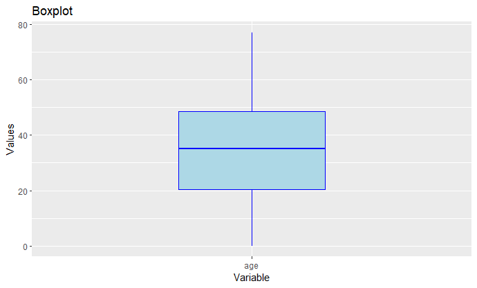
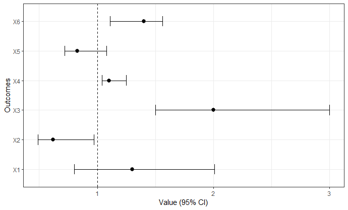

Package overview
The ggOxford package provides functions for plotting and visualising data according to a particular theme and pallette. The types of plots supported by the package include box plots, forest plots and bar charts. The package also allows the creation of mock data sets, such as mockForestPlotData, as well as providing the functions mockSummariseLargeScaleCharacteristics and mockSummarisedResult for the user’s convenience.
Package installation
You can install the latest version of ggOxford like so:
# install.packages("devtools")
devtools::install_github("oxford-pharmacoepi/ggoxford")Example usage
Create a box plot
To create a box plot, we would use the command
box_plot(my_data, group_level, strata_name, strata_level, variable)where “my_data” is the dataset to use and “variable” is the variable to plot over.
For example,
my_data <- mockSummarisedResult(seed = 1, as.Date("2021-01-01"), as.Date("2021-12-31"), 100)
group_level <- "Cohort 1"
strata_name <- "Overall"
strata_level <- "Overall"
variable <- "age"
box_plot(my_data,"Cohort 1","Overall","Overall","age")
Create a forest plot
To create a forest plot, we would use the command
forestPlot(my_data, outcomelabels, estimate, lowCi, highCi)where “my_data” is the dataset to use, “outcomelabels” is the column containing the labels, and “lowCi”, “highCi” are the low and high 95 % confidence interval values respectively.
For example,
df <- data.frame( label = paste0(“X”, 1:6), mean = c(1.30, 0.62, 2.00, 1.10, 0.83, 1.4), lower = c(0.80, 0.49, 1.50, 1.04, 0.72, 1.11), upper = c(2.01, 0.97, 3.00, 1.25, 1.08, 1.56) )
result <- forestPlot(df, “label”, “mean”, “lower”, “upper”)

Create mockSummarisedResult
To use the function mockSummarisedResult, we employ the command
mockSummarisedResult(seed, startDate, endDate, populationSize)where “seed” is the seed for the random mock data generated, “startDate”, “endDate” are the start and end dates for the data, and “populationSize” is the size of the population to use.
For example,
> mockSummarisedResult(1, as.Date(“2021-01-01”), as.Date(“2021-12-31”), 10)
# A tibble: 404 × 9
group_name group_level strata_name strata_level variable variable_level variable_type
1 cohort_name Cohort 1 Overall Overall number subjec… NA NA
2 cohort_name Cohort 1 Overall Overall number records NA NA
3 cohort_name Cohort 1 Overall Overall cohort_start_… NA date
4 cohort_name Cohort 1 Overall Overall cohort_start_… NA date
5 cohort_name Cohort 1 Overall Overall cohort_start_… NA date
6 cohort_name Cohort 1 Overall Overall cohort_start_… NA date
7 cohort_name Cohort 1 Overall Overall cohort_start_… NA date
8 cohort_name Cohort 1 Overall Overall cohort_end_da… NA date
9 cohort_name Cohort 1 Overall Overall cohort_end_da… NA date
10 cohort_name Cohort 1 Overall Overall cohort_end_da… NA date
# ℹ 394 more rows # ℹ 2 more variables: estimate_type, estimate # ℹ Use print(n = ...)to see more rows